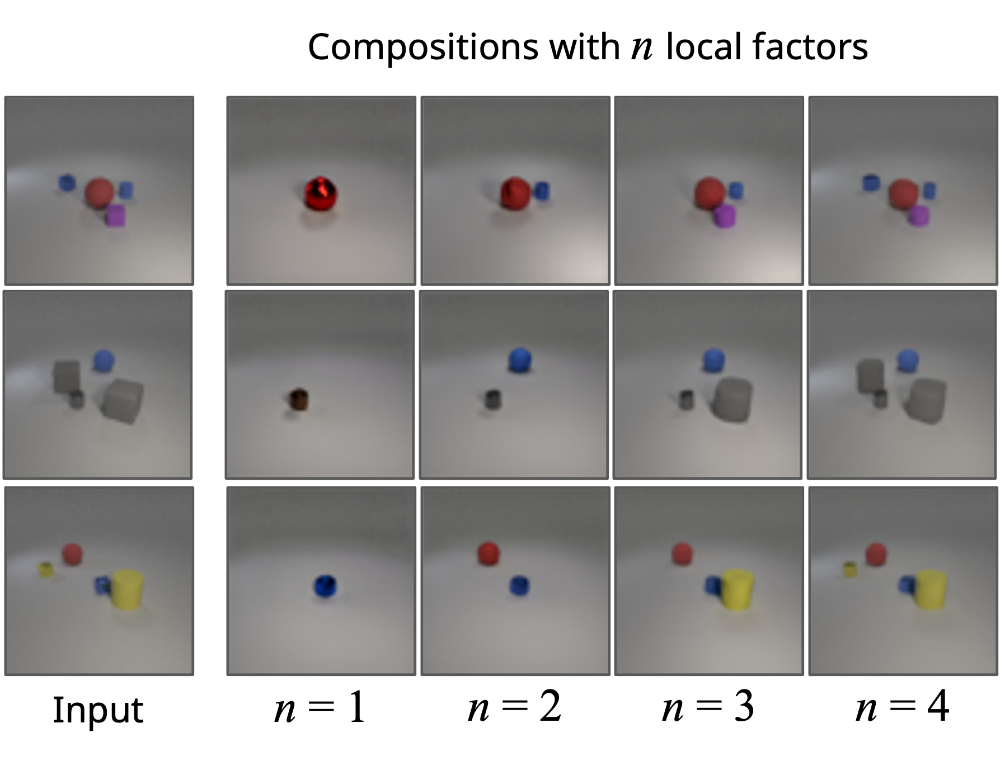

We sincerely thank the reviewers for their valuable feedback and insightful suggestions. In response to their inquiries, we showcase additional results to further address their concerns and provide a comprehensive understanding of our work.
Figure 1. Higher-Resolution 256x256 CelebA-HQ
We offer additional qualitative results on higher-resolution images. As shown in the figure, our approach effectively decomposes 256x256 images into distinct components, providing good reconstruction quality.

Figure 2a. Additive Components on CelebA-HQ
To demonstrate the impact of each component, we present composition results produced by incrementally adding one component at a time. Below, on the left-hand side, we show the factors discovered for each input image. On the right-hand side, we iteratively add one factor to our latent vector subset and generate the composition results. We see that composition images steadily approach the original input image with the addition of each component.

Figure 2b. Additive Components on CLEVR
In CLEVR (below), incrementally adding one component at a time mirrors the process of generating one object at a time in the results. Our method can iteratively incorporate each object represented by the learned local factors until it reconstructs the original image's object setup.
Figure 3. Impact of Latent Encoder Architecture
We showcase the effects of changing latent encoder architecture by experimenting with encoders of different depths. Here, 1 level refers to one residual layer and convolutional layer. In our methodology, we use an encoder depth of 3. As shown in the qualitative results on the same input image, encoders with different depths still learn similar decomposed factors, including shadows, background, etc.
Figure 4. Systematic Selection of Number of Components
As a proxy for determining the optimal number of components for decomposition, we conduct reconstruction training by employing a weighted combination of $K$ components, where $K$ is sufficiently large and the weights are learned, rather than simply averaging $K$ components. Subsequently, we utilize the weight values to identify some $K'$ components that were less significant, indicated by their lower weights. The remaining $K - K'$ components may offer a more suitable fit for the dataset. For simplicity, we used $K = 6$ in the example below and found that model learns to differentiate the importance of each component.
Figure 5. Predicting Noise
The method fails to decompose images into meaningful concepts if predicting the noise $\epsilon_0$ directly. Instead, the components appear to be randomly generated instances from the dataset domain. As shown in the Figure, on CelebA-HQ, the model components are other human faces. We hypothesize this is because, while the components' reconstruction of $\epsilon_0$ may be accurate, the denoising process on an individual noise component is still akin to sampling from the original image domain.
Figure 6. Decomposition with Pretrained Stable Diffusion
We employed Pretrained Stable Diffusion for Decomposition and empirically observed that pretrained models largely fail to decompose images accurately. Figure 6 illustrates this observation, where the components decomposed from KITTI images seldom represent meaningful factors.